|
Ritorna all'indice delle parrocchie
Il numero abbinato ad ogni famiglia indica la relativa posizione nello Stato delle Anime
1 - Giuseppe Cianfarotti - Paroco
2 - Capazzi Gaspero - Padre eremita - questua
3 - Bardelli Giuseppe - mezzaiolo di terreni lavora i terreni raccoglie il sugo parte dell'anno .....
4 - Carli Giovanni Battista
5 - Baroni Francesco - mezzaiolo attende al podere
6 - Franci Gaetano - mezzaiolo di terreni e va a opera sopra i terreni e fa i pali
7 - Baroni Giovanni Battista - mezzaiolo
8 - Baroni Francesco - mezzaiolo di terreni e va a opera sopra i terreni
9 - Pinassi Francesco - mezzaiolo di terreni e va a opera sopra i terreni
10 - Sacchi Francesco - n.d. - 1
11 - Francioli Giacomo - va a opera sopra i terreni ......
12 - Cianfarotti Girolamo - proprietario attende al terreno
13 - Torini Giovanni - raccoglie il concime e va a opera sopra i terreni
14 - Cianfarotti Alessandro - raccoglie il concime e va a opera sopra i terreni
15 - Bianciardi Giovanni - mezzaiolo fa il vetturale parte dell'anno con le bestie del podere - 12
16 - Cianfarotti Francesco - mezzaiolo attende al podere
17 - Giusti Anna maria - cuce pannilini - 1
18 - Ferrozzi Pietro - mezzaiolo attende al podere e fa i pali
19 - Brisi Francesco - mezzaiolo di terreni va a opera sopra i terreni
20 - Pacchiani Giuseppe - mezzaiolo attende al podere
21 - Borselli Anastasia - vedova - fila accatta e raccohlie il sugo
22 - n. d. Bernardino - va a opera sopra i terreni raccoglie il sugo
23 - Barni Natale - fittuario di mulino
24 - Cianfarotti Galgano fa il fattore attende alla casa
25 - Burroni Orsola - vedova - fila il lino va a opera sopra i terreni accatta - 2
26 - Civitelli Arcangelo - mezzaiolo di terreni va a opera sopra i terreni - 2
27 - Riccucci Giuseppe - mezzaiolo di terreni va a opera sopra i terreni
28 - Cianfarotti Giuseppe - proprietario di terreni
29 - Giannetti Giovanni Maria - mezzaiolo di terreni va a opera sopra i terreni
30 - Carli Antonio - mezzaiolo di terreni va a opera sopra i terreni
31 - Formiconi Angela - vedova - fila e va a opera sopra i terreni - 1
32 - Vigni Angela - vedova - fila il lino va a opera sopra i terreni accatta - 2
33 - Gatti Gugliemmo - mezzaiolo di terreni va a opera sopra i terreni
34 - Ricci Giuseppe - mezzaiolo di terreni va a opera sopra i terreni - 1
35 - Bardelli Pavolo - mezzaiolo di terreni va a opera sopra i terreni - 2
36 - Marsini Bernardo - va a opera sopra i terreni
37 - Merli Arcangelo - mezzaiolo fa il vetturale con le bestie del podere parte dell'anno
38 - Maremmi Domenico - va a opera sopra i terreni fa la brace - 3
39 - Centini Giovanni Battista - mezzaiolo attende al podere
40 - Geri Amadio - va a opera sopra i terreni
41 - Stacchini Pietro - fa il muratore ed il macellaro
42 - Francioli Margherita - vedova - fa la fattoressa - 1
43 - Rabissi Giuseppe - mezzaiolo di terreni va a opera sopra i terreni
44 - Bani Domenico - mezzaiolo di terreni va a opera sopra i terreni - 4
45 - Fiomi Domenico - mezzaiolo attende al podere - 3
46 - Fantacci Giovanni - mezzaiolo di terreni va a opera sopra i terreni
47 - Maestrini Arcangelo - attende al podere fa il vetturale con le bestie del podere parte dell'anno
48 - Massi Marco - mezzaiolo attende al podere fa il vetturale con le bestie del podere parte dell'anno
49 - Rabissi Giacomo - mezzaiolo di terreni va a opera sopra i terreni
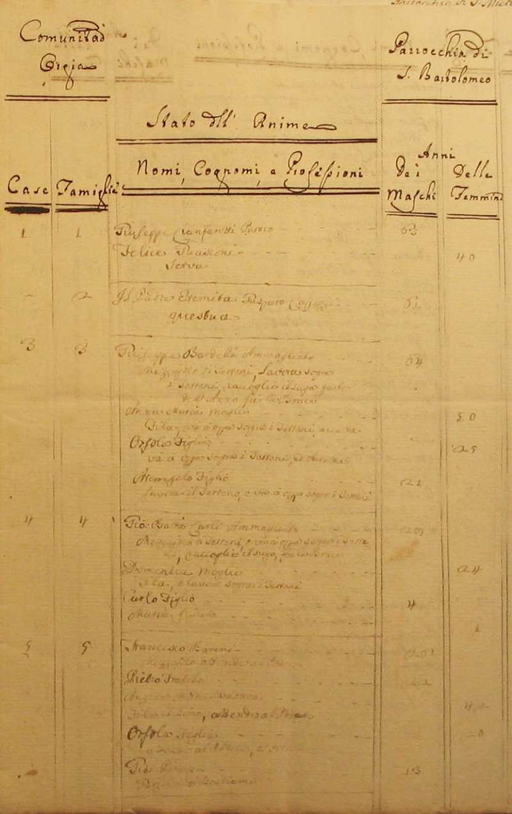
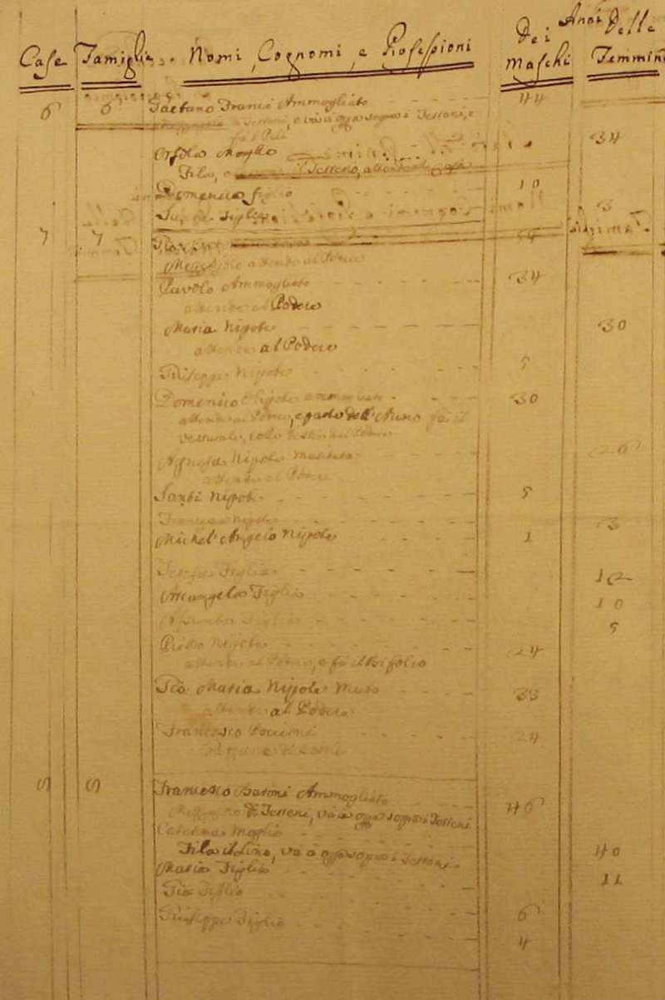
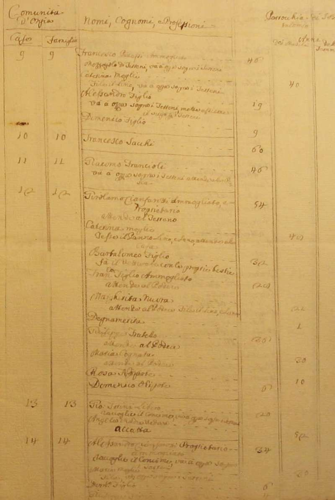
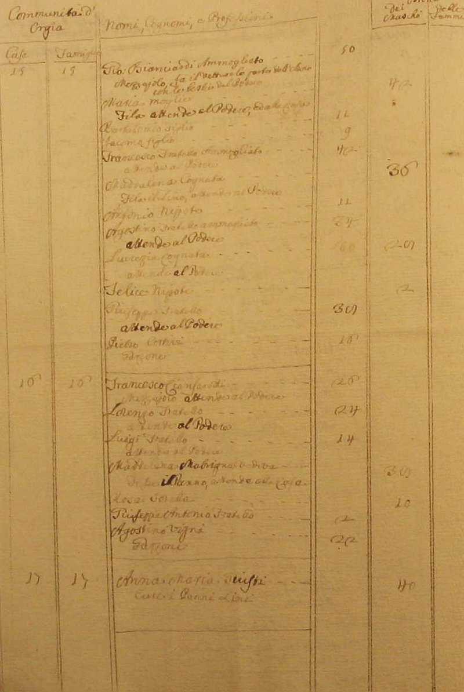
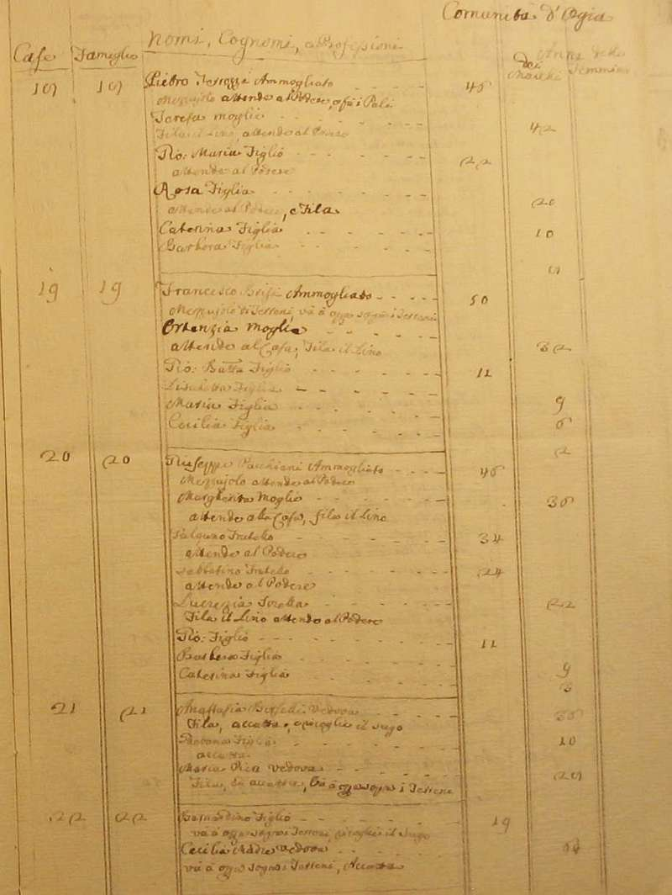
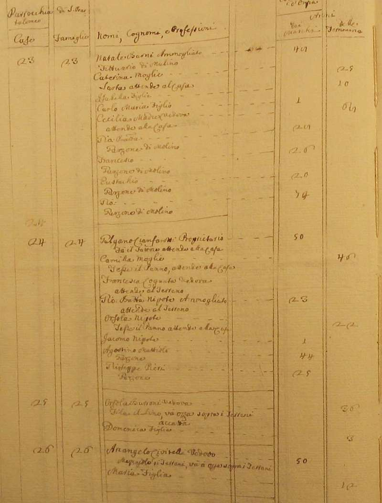
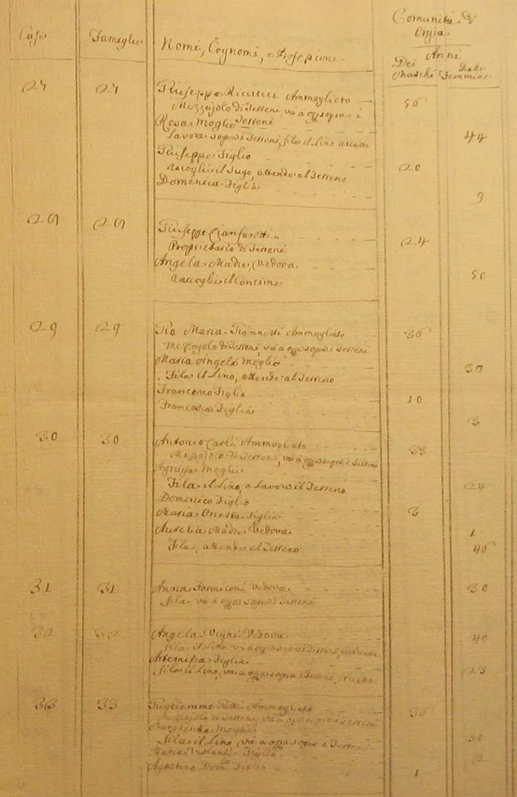
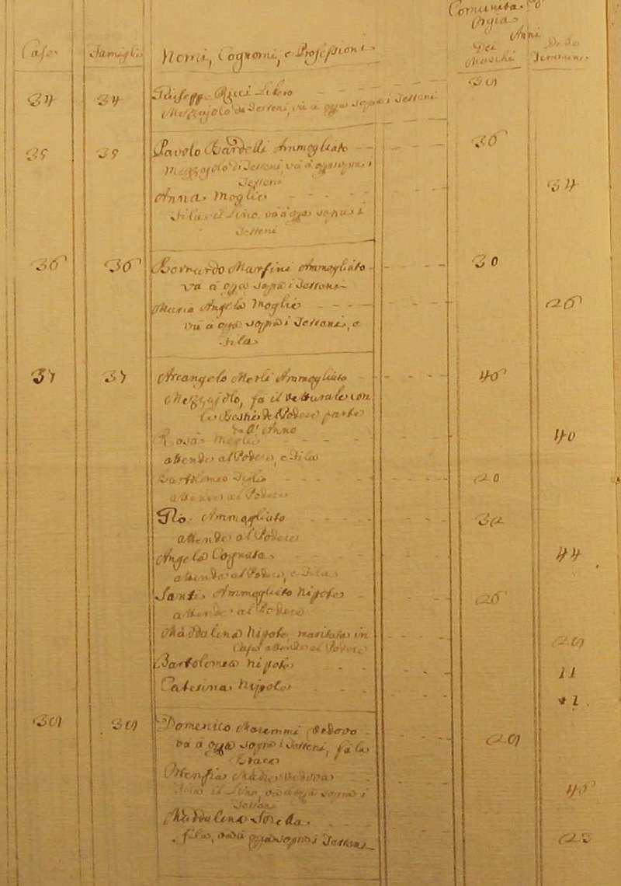
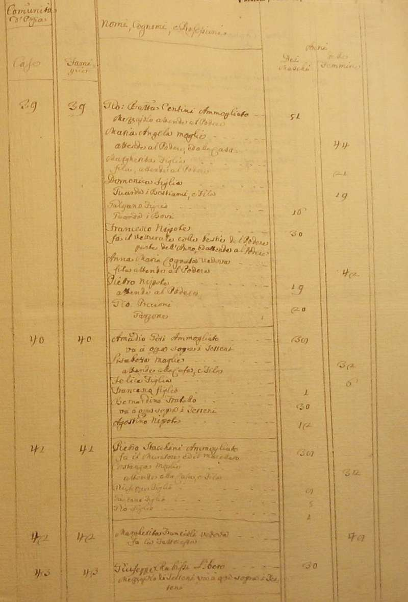
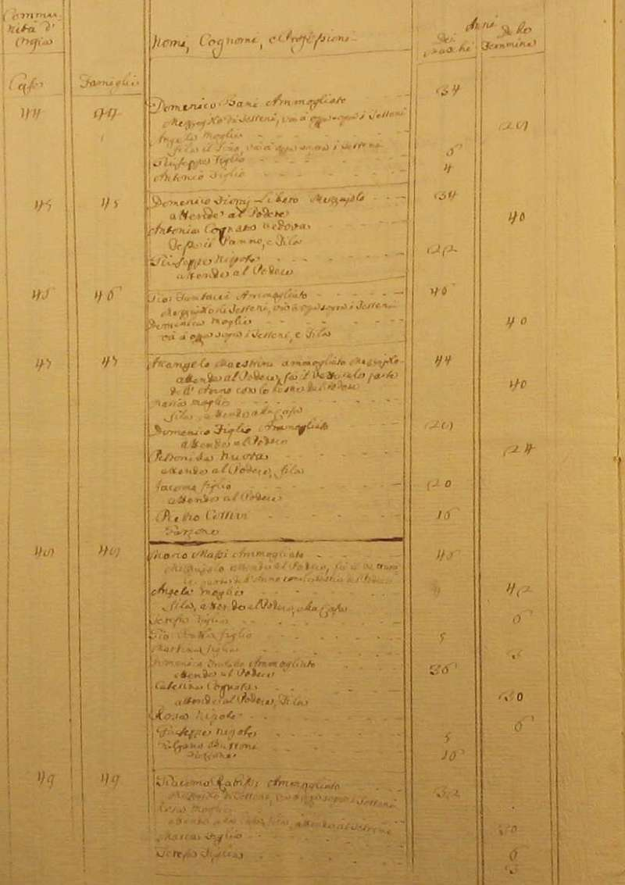
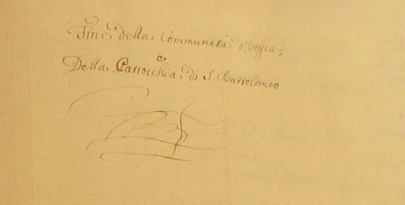
Torna ad inizio pagina
Ritorna all'indice delle parrocchie
| |

|